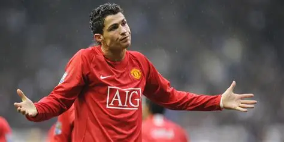
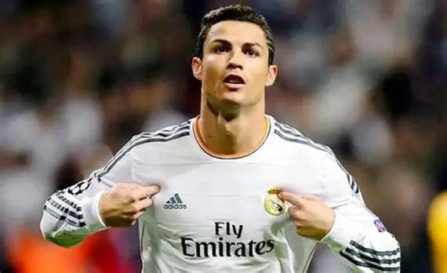

Kariéra Cristiana Ronalda
🟢 Začátky ve Sportingu Lisabon
Cristiano Ronaldo se narodil 5. února 1985 v portugalském městě Funchal na Madeiře. S profesionálním fotbalem začal v klubu Sporting Lisabon, kde si rychle získal pozornost díky svému neuvěřitelnému tempu a technice. Už jako teenager zaujal skauty velkých klubů po celé Evropě.
🔴 Manchester United (2003–2009)
V roce 2003 přestoupil do Manchesteru United pod vedením sira Alexe Fergusona. Během šesti sezón vyhrál Premier League, Ligu mistrů a získal svůj první Zlatý míč v roce 2008. V Anglii se z mladého talentu stal světovou superhvězdou.
⚪ Real Madrid (2009–2018)
V roce 2009 přestoupil do Real Madridu za tehdy rekordních 94 milionů eur. V dresu „Bílého baletu“ odehrál 438 zápasů a vstřelil neuvěřitelných 450 gólů. Vyhrál čtyřikrát Ligu mistrů a stal se legendou klubu.
⚫ Juventus (2018–2021)
Po odchodu z Madridu přestoupil do Juventusu Turín, kde navázal na svou dominanci. I přes vyšší věk pokračoval ve fantastické formě, stal se nejlepším střelcem Serie A a vyhrál dva tituly.

🟡 Návrat do Manchesteru United a Al Nassr
V roce 2021 se Ronaldo vrátil do Manchesteru United, aby završil svůj příběh v Premier League. Po roce a půl zamířil do saúdského klubu Al Nassr, kde pokračuje jako lídr a inspirace pro celý tým.